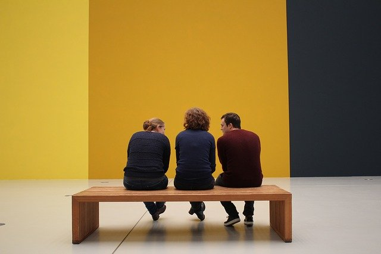

border-radius: n;
양사방 모서리가 동일하게 적용됨
border-radius: 0.3em;

visitors
visitors
border-radius: n n;
좌측상단과 우측하단 우측상단과 좌측하단의 순서로 적용됨
border-radius: 10px 50px; 적용
border-radius: 50px 10px; 적용
border-radius: 50% 0;
border-radius: 0.3em;
border-radius: n n n n;
좌측상단 우측상단 좌측하단 우측하단의 순서로 적용됨
border-radius: 0.3em;
border-radius: 2em 0 0 0;
border-radius: 0 2em 0 0;
border-radius: 0 0 2em 0;
border-radius: 0 0 0 2em;
border-radius: 2em 2em 0 0;